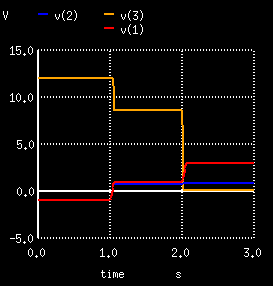
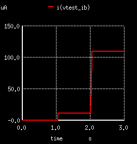
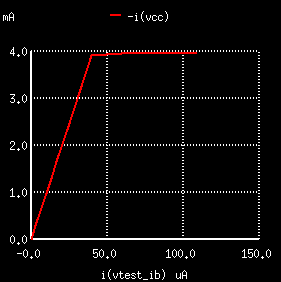

QXXXXXXX nc nb ne <ns> mname <area=val> <areac=val> <areab=val> + <m=val> <off> <ic=vbe, vce> <temp=val> <dtemp=val>
| No. | 参数 | 解析 |
|---|---|---|
| 1 | nc | 集电极节点 |
| 2 | nb | 基极节点 |
| 3 | ne | 发射极节点 |
| 4 | ns | 衬底节点，若省略，则表示接地 |
| 5 | mname | 模型名 |
| 6 | area | 发射极E的接触面乘积因子 |
| 7 | areac | 集电极C的接触面乘积因子 |
| 8 | areab | 基极B的接触面乘积因子 |
| 9 | m | 乘数因子 |
| 10 | off | 设置off表示可以设置初始条件，见下面IC |
| 11 | ic | 设置BE间初始电压Vbe和CE间初始电压Vce |
| 12 | temp | 工作温度，会覆盖.option控制行中的设置 |
| 13 | dtemp | 相对工作温度 |
BTJ集电极node=10，基极node=24，发射极node=13，模型QMOD，初始条件Vbe=0.6V，Vce=5.0V
Q23 10 24 13 QMOD IC=0.6, 5.0
BTJ集电极node=11，基极node=26，发射极node=4，衬底node=20，模型MOD1
Q50A 11 26 4 20 MOD1
*exam 14.5.1 Vi 1 0 PWL(0 -1v 1s -1v 1.05s 1v 2s 1v 2.05s 3v 3s 3v) Vcc 4 0 12V Vtest_IB 2 99 0v Rb 1 2 20k Rc 4 3 3k Q1 3 99 0 QMOD .model QMOD NPN (BF=100) .tran .01s 3s .control run plot v(1) v(2) v(3) plot -i(Vcc) vs i(Vtest_IB) .endc .end |
|
|    | |
|
从上图可以看到:
|
|